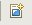

Drucken der aktuellen Karte
Drucken der aktuellen Karte
Zum Drucken der aktuellen Karte muß zuerst eine Druckseite angelegt werden, die das Layout festlegt und welche dann gedruckt werden kann.
- Klicken Sie auf die Schaltfläche "Druckseite"
 auf der Symbolleiste, um eine neue Druckseite zu erzeugen.
- Sie werden nun nach der zu verwendenden Vorlage gefragt. Zur Zeit ist nur eine Vorlage verfügbar. Wählen Sie diese aus und bestätigen Sie mit "OK".

- Nun können Sie erneut die Schaltfläche "Drucken" aufrufen, um die Seite zum Drucker zu senden.
(c) Copyright (c) 2004-2008 Refractions Research Inc. and others.